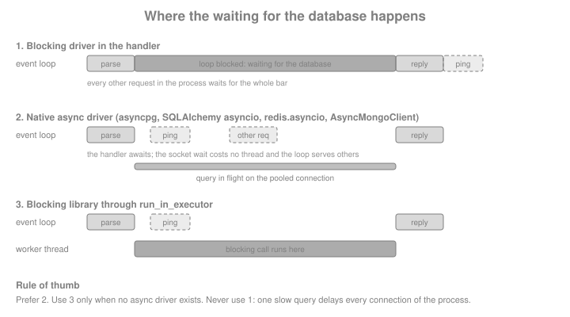

Databases & Async Drivers
|
This content was generated with the assistance of AI and should be verified against the official documentation before being relied on in production. |
This page is written against Tornado 6.5.10 on Python 3.13, checked on 2026-10-07. Tornado 6.6 is only available as an
alpha (6.6a1) at the time of writing, so everything described as "6.6" below is upcoming and may still change; nothing
on this page depends on it. The drivers used in the examples were SQLAlchemy 2.1.3 with aiosqlite 0.22.1, asyncpg 0.32.0,
redis 8.1.0 (with fakeredis 2.39.0 standing in for a server) and PyMongo 4.18.2. Every example marked as
runnable was executed with those versions against loopback servers or AsyncHTTPTestCase; the PostgreSQL, Redis and
MongoDB servers of the Bookshelf Live scenario are not available to the examples, so the PostgreSQL and MongoDB
snippets that need a live server are shown but not run, and are marked as such. This page covers only the Tornado
wiring: the engines themselves are documented in the SQL,
Redis and MongoDB sections of this site.
Tornado ships no database layer. It has no ORM, no connection pool and no db extension point: its job is to serve
requests on one event loop (see Asynchronous I/O & the
Event Loop). That makes the choice of database driver the most consequential decision after the choice of framework.
A driver that blocks, even for a few milliseconds per query, blocks every other connection of that process for the same
time, and the effect adds up under load. This page shows the three families of solutions in order of preference: a
native asyncio driver, a synchronous library moved off the loop with run_in_executor, and the wiring that gives each
handler its pool.
Why Tornado Needs Async Drivers
A Tornado process runs one event loop on one thread. While a handler is executing Python code, nothing else in that
process makes progress; it hands control back only at an await. A driver such as psycopg2, PyMySQL, pymongo's
synchronous MongoClient, or the blocking redis.Redis does its network I/O with ordinary blocking socket calls, so
the whole loop waits for the database.

The following fixture proves the point and is reused by the executor section below. It starts a Tornado server on a
loopback port, issues one slow request and several pings, and measures how long the pings wait. The slow handler
simulates a 0.3 second synchronous driver call with time.sleep.
import asyncio
import contextlib
import time
from tornado import httpclient, httpserver, netutil, web
from tornado.escape import json_decode, json_encode
@contextlib.asynccontextmanager
async def serving(app):
"""Serve app on a free loopback port and yield its base URL."""
sockets = netutil.bind_sockets(0, "127.0.0.1")
server = httpserver.HTTPServer(app)
server.add_sockets(sockets)
try:
yield f"http://127.0.0.1:{sockets[0].getsockname()[1]}"
finally:
server.stop()
await server.close_all_connections()
class PingHandler(web.RequestHandler):
def get(self):
self.write("pong")
class BlockingHandler(web.RequestHandler):
async def get(self):
time.sleep(0.3) # stands in for a blocking driver call
self.write("done")
async def slowest_ping(app, slow_path):
client = httpclient.AsyncHTTPClient()
async def timed_ping(base):
started = time.perf_counter()
await client.fetch(base + "/ping")
return time.perf_counter() - started
async with serving(app) as base:
slow = asyncio.ensure_future(client.fetch(base + slow_path))
await asyncio.sleep(0) # let the slow request be sent first
pings = await asyncio.gather(*[timed_ping(base) for _ in range(5)])
await slow
return max(pings)
async def demo_blocked():
app = web.Application([("/ping", PingHandler), ("/slow", BlockingHandler)])
worst = await slowest_ping(app, "/slow")
print(f"worst ping while the loop is blocked: {worst:.2f}s")
assert worst > 0.15
asyncio.run(demo_blocked())A ping that normally takes a millisecond waits for most of the 0.3 seconds, because the loop cannot answer it until the slow handler returns. The same thing happens, in a less obvious way, with any real synchronous driver.
Choosing a Driver
The table lists the drivers used in this page and the ones to avoid. "Native async" means the driver speaks the
database protocol on the running asyncio loop, which is the loop Tornado runs on (see
Coroutines & asyncio).
| Database | Use with Tornado | Avoid, or wrap in an executor |
|---|---|---|
PostgreSQL |
|
|
SQLite |
SQLAlchemy asyncio with |
The standard |
MySQL / MariaDB |
SQLAlchemy asyncio with |
|
Redis |
|
The blocking |
MongoDB |
PyMongo’s |
Motor (deprecated, see below) and the blocking |
Anything without an async driver |
|
Calling the library from the handler body |
SQLAlchemy 2.1 no longer installs greenlet by default, so the asyncio extension needs the extra:
pip install "sqlalchemy[asyncio]" aiosqlite (or asyncpg for PostgreSQL). An ImportError that mentions greenlet
is the symptom of forgetting it. Books and older tutorials written for Tornado 4 often use callback-style drivers such
as momoko for PostgreSQL or tornado-mysql; their gen.coroutine-era APIs are not what current Tornado code uses,
and the asyncio drivers above replace them.
Wiring Pools into Handlers
A pool must be created once per process, on the running event loop, and every handler must reach it without a global
variable. The two idiomatic ways are the initialize hook and the application settings; both are plain Tornado and
are independent of the driver.
| Technique | How it works | When to use it |
|---|---|---|
|
|
Explicit dependencies, easy to see and to replace per route (a read replica for reports, a fake in tests) |
Application |
Extra keyword arguments to |
A dependency used by most handlers, or by a base class, so the route table stays short |
An attribute on the |
|
Small scripts; type checkers cannot see the attribute, so prefer the other two for larger code |
The Bookshelf Live API uses SQLAlchemy asyncio. The model is declared as with synchronous SQLAlchemy; the
AsyncAttrs mixin makes lazily loaded attributes awaitable. SQLite stands in for PostgreSQL so that the example runs
anywhere: only the URL changes.
import os
import tempfile
from sqlalchemy import ForeignKey, func, select
from sqlalchemy.exc import IntegrityError
from sqlalchemy.ext.asyncio import (
AsyncAttrs,
AsyncSession,
async_sessionmaker,
create_async_engine,
)
from sqlalchemy.orm import DeclarativeBase, Mapped, mapped_column, relationship, selectinload
class Base(AsyncAttrs, DeclarativeBase):
pass
class Book(Base):
__tablename__ = "books"
id: Mapped[int] = mapped_column(primary_key=True)
isbn: Mapped[str] = mapped_column(unique=True)
title: Mapped[str]
reviews: Mapped[list["Review"]] = relationship(back_populates="book")
class Review(Base):
__tablename__ = "reviews"
id: Mapped[int] = mapped_column(primary_key=True)
book_id: Mapped[int] = mapped_column(ForeignKey("books.id"))
rating: Mapped[int]
body: Mapped[str]
book: Mapped[Book] = relationship(back_populates="reviews")
def make_engine(url):
return create_async_engine(url, pool_pre_ping=True)
def make_session_factory(engine):
# expire_on_commit=False: attributes stay readable after commit() without
# an implicit refresh query
return async_sessionmaker(engine, expire_on_commit=False)
async def create_tables(engine):
async with engine.begin() as conn:
await conn.run_sync(Base.metadata.create_all)The handlers receive the session factory through initialize and open one AsyncSession per request, inside the
handler method, with async with:
class DbHandler(web.RequestHandler):
def initialize(self, session_factory):
self.session_factory = session_factory
class BooksHandler(DbHandler):
async def get(self):
async with self.session_factory() as session:
books = (await session.scalars(select(Book).order_by(Book.title))).all()
self.write({"books": [{"isbn": b.isbn, "title": b.title} for b in books]})
async def post(self):
data = json_decode(self.request.body)
async with self.session_factory() as session:
session.add(Book(isbn=data["isbn"], title=data["title"]))
try:
await session.commit()
except IntegrityError:
raise web.HTTPError(409, reason="Duplicate ISBN")
self.set_status(201)
self.write({"isbn": data["isbn"]})
class ReviewsHandler(DbHandler):
async def get(self, isbn):
async with self.session_factory() as session:
book = await session.scalar(
select(Book).where(Book.isbn == isbn).options(selectinload(Book.reviews))
)
if book is None:
raise web.HTTPError(404)
self.write({"isbn": isbn, "ratings": [r.rating for r in book.reviews]})
async def post(self, isbn):
data = json_decode(self.request.body)
async with self.session_factory() as session:
book_id = await session.scalar(select(Book.id).where(Book.isbn == isbn))
if book_id is None:
raise web.HTTPError(404)
session.add(Review(book_id=book_id, rating=data["rating"], body=data["body"]))
await session.commit()
self.set_status(201)
def make_app(session_factory):
shared = dict(session_factory=session_factory)
return web.Application(
[
(r"/books", BooksHandler, shared),
(r"/books/([0-9-]+)/reviews", ReviewsHandler, shared),
]
)The session is opened with async with inside each method rather than in prepare() and closed in on_finish()
because on_finish() is a plain method: it cannot await, so it cannot call await session.close(). A helper method
or a small async context manager on the base class is the Tornado way to avoid repeating the async with. The pattern
borrowed from synchronous frameworks, a session stored on the request and committed at the end, does not translate.
The endpoints above leave out authentication to stay focused on the database; see
Authentication & Signed Cookies for @web.authenticated.
The lifecycle lives in main(), which is where the engine is created and disposed. This function is runnable: it takes
a database URL and an asyncio.Event that stops the server (a real deployment sets it from a signal handler, see
Running & Deploying), and the code below then calls it and exercises the API.
async def main(database_url, stop, port_box):
engine = make_engine(database_url)
await create_tables(engine)
app = make_app(make_session_factory(engine))
sockets = netutil.bind_sockets(0, "127.0.0.1")
server = httpserver.HTTPServer(app)
server.add_sockets(sockets)
port_box.append(sockets[0].getsockname()[1])
try:
await stop.wait()
finally:
server.stop()
await server.close_all_connections()
await engine.dispose() # close pooled connections inside the loop
async def exercise_api():
path = os.path.join(tempfile.mkdtemp(), "bookshelf.db")
stop, port_box = asyncio.Event(), []
task = asyncio.ensure_future(main(f"sqlite+aiosqlite:///{path}", stop, port_box))
while not port_box:
await asyncio.sleep(0.01)
base = f"http://127.0.0.1:{port_box[0]}"
client = httpclient.AsyncHTTPClient()
isbn = "978-1-4919-0001-0"
created = await client.fetch(
base + "/books", method="POST",
body=json_encode({"isbn": isbn, "title": "Introduction to Tornado"}),
)
duplicate = await client.fetch(
base + "/books", method="POST", raise_error=False,
body=json_encode({"isbn": isbn, "title": "Again"}),
)
await client.fetch(
base + f"/books/{isbn}/reviews", method="POST",
body=json_encode({"rating": 5, "body": "Great"}),
)
reviews = json_decode((await client.fetch(base + f"/books/{isbn}/reviews")).body)
print(created.code, duplicate.code, reviews)
assert (created.code, duplicate.code) == (201, 409)
assert reviews["ratings"] == [5]
stop.set()
await task
asyncio.run(exercise_api())Source: SQLAlchemy: AsyncEngine.dispose
Three details of that code carry most of the weight. The engine is created inside the running loop (not at import
time): async drivers bind their connections to the loop that opens them, and an engine used from a different loop
fails with "attached to a different loop" or "Event loop is closed" errors. The server is stopped and
close_all_connections() is awaited before the engine is disposed, so no request is still using a connection that is
being closed. And engine.dispose() is awaited: engines that fall out of scope without it leak their connections.
The Same Dependency Through Settings
A base handler can read the factory from the application settings instead of initialize, which keeps the route table
free of keyword arguments:
class SettingsDbHandler(web.RequestHandler):
@property
def session_factory(self):
return self.settings["session_factory"]
class CountHandler(SettingsDbHandler):
async def get(self):
async with self.session_factory() as session:
total = await session.scalar(select(func.count()).select_from(Book))
self.write({"books": total})
async def settings_demo():
path = os.path.join(tempfile.mkdtemp(), "settings.db")
engine = make_engine(f"sqlite+aiosqlite:///{path}")
await create_tables(engine)
app = web.Application(
[(r"/count", CountHandler)],
session_factory=make_session_factory(engine),
)
async with serving(app) as base:
body = json_decode((await httpclient.AsyncHTTPClient().fetch(base + "/count")).body)
print(body)
assert body == {"books": 0}
await engine.dispose()
asyncio.run(settings_demo())Source: Tornado: Application.settings
The settings approach has one trap: any keyword argument that is not a Tornado setting is accepted silently, so a
misspelt name (sesion_factory) is only discovered when the handler raises KeyError on the first request.
SQLAlchemy asyncio in Detail
SQLAlchemy 2.x has an asyncio extension in sqlalchemy.ext.asyncio whose objects mirror the synchronous ones:
create_async_engine() returns an AsyncEngine, async_sessionmaker produces AsyncSession objects, and queries are
the same select() constructs, awaited. The details that matter when serving requests:
| Topic | What to do in a Tornado application |
|---|---|
One session per request |
|
One session per task |
A single |
|
After |
Lazy loading |
Accessing an unloaded relationship fails with a |
Synchronous-only helpers |
|
Pool |
The engine owns a connection pool (default |
Disposal |
|
The lazy-loading rule deserves a demonstration, because it is the most common first error. The example shows the failure (caught, so the example keeps running) and the two fixes:
async def lazy_loading_demo():
path = os.path.join(tempfile.mkdtemp(), "lazy.db")
engine = make_engine(f"sqlite+aiosqlite:///{path}")
await create_tables(engine)
factory = make_session_factory(engine)
async with factory() as session:
session.add(Book(isbn="978-0", title="Lazy"))
await session.commit()
async with factory() as session:
book = await session.scalar(select(Book).where(Book.isbn == "978-0"))
try:
book.reviews # a lazy load: needs implicit I/O
except Exception as exc:
print("lazy load fails:", type(exc).__name__, "wrapping", type(exc.orig).__name__)
print("awaitable_attrs:", await book.awaitable_attrs.reviews)
async with factory() as session:
book = await session.scalar(
select(Book).where(Book.isbn == "978-0").options(selectinload(Book.reviews))
)
print("selectinload:", book.reviews)
await engine.dispose()
asyncio.run(lazy_loading_demo())SQLAlchemy 2.0 introduced the asyncio extension in its stable form (1.4 had a beta) and 2.1, the release this page was
checked against, keeps the same API, so code from 2.0-era tutorials works; the visible change is the optional
greenlet dependency mentioned earlier. Third-party tutorials for Tornado that call sessionmaker(..., class_=AsyncSession)
still work, but async_sessionmaker is the documented spelling.
asyncpg: PostgreSQL Without an ORM
asyncpg is a PostgreSQL driver written for asyncio that does not implement the Python DB-API: queries use $1,
$2 placeholders, rows are Record objects, and the connection pool is a first-class object. It is the right choice
when the SQL is hand-written and every millisecond counts; the same asyncpg is also what SQLAlchemy’s
postgresql+asyncpg dialect uses underneath. The pool is created in main() (never at import time) and given to
handlers exactly like the session factory above. This example needs a PostgreSQL server and is not run; the
connection string is read from the environment, never written in the source.
# norun (needs a PostgreSQL server)
import os
import asyncpg
from tornado import web
class PgBooksHandler(web.RequestHandler):
def initialize(self, pool):
self.pool = pool
async def get(self, isbn):
# pool.fetchrow() acquires a connection, runs the query and releases it
row = await self.pool.fetchrow(
"SELECT isbn, title FROM books WHERE isbn = $1", isbn
)
if row is None:
raise web.HTTPError(404)
self.write(dict(row))
async def post(self, isbn):
# several statements that must share a transaction: acquire explicitly
async with self.pool.acquire() as conn:
async with conn.transaction():
await conn.execute("INSERT INTO books (isbn, title) VALUES ($1, $2)", isbn, "Untitled")
await conn.execute("INSERT INTO audit (what) VALUES ($1)", f"created {isbn}")
self.set_status(201)
async def main():
pool = await asyncpg.create_pool(
dsn=os.environ["DATABASE_URL"], # supplied by the environment or a secret store
min_size=2,
max_size=10,
command_timeout=10,
)
app = web.Application([(r"/pg/books/([0-9-]+)", PgBooksHandler, dict(pool=pool))])
... # listen, wait for the stop event, then:
await pool.close()Source: asyncpg: Connection pools
create_pool() returns an awaitable pool; min_size, max_size and command_timeout are keyword arguments, and
max_inactive_connection_lifetime closes connections that idle too long. pool.fetch, pool.fetchrow, pool.fetchval
and pool.execute are shortcuts that acquire and release a connection for one statement; use pool.acquire() as an
async context manager when several statements must share a connection or a transaction (conn.transaction()).
Pool objects are bound to the loop that created them, so they must be created inside the async def main() that
Tornado already runs in.
redis.asyncio: Caches, Counters and Sessions
The redis package (the one that absorbed aioredis) provides redis.asyncio, whose Redis client has the same
command methods as the synchronous one, all awaitable. A client owns a connection pool, so one client per process is
shared between handlers. The example caches the review count of a book with the cache-aside pattern (read the cache,
fall back to the database, store with a time-to-live). fakeredis.FakeAsyncRedis is an in-memory stand-in used here so
that the example runs; a real deployment would build the client from a URL kept in the environment.
import fakeredis
import redis.asyncio as aioredis
def real_redis_client(): # shown for the real deployment, not called here
return aioredis.from_url(os.environ["REDIS_URL"], decode_responses=True)
class CachedCountHandler(DbHandler):
def initialize(self, session_factory, redis):
super().initialize(session_factory)
self.redis = redis
async def get(self, isbn):
key = f"bookshelf:review-count:{isbn}"
cached = await self.redis.get(key)
if cached is not None:
self.set_header("X-Cache", "hit")
self.write({"isbn": isbn, "reviews": int(cached)})
return
async with self.session_factory() as session:
count = await session.scalar(
select(func.count(Review.id)).join(Book).where(Book.isbn == isbn)
)
await self.redis.set(key, count, ex=30) # expire after 30 seconds
self.set_header("X-Cache", "miss")
self.write({"isbn": isbn, "reviews": count})
async def redis_demo():
path = os.path.join(tempfile.mkdtemp(), "cache.db")
engine = make_engine(f"sqlite+aiosqlite:///{path}")
await create_tables(engine)
factory = make_session_factory(engine)
cache = fakeredis.FakeAsyncRedis(decode_responses=True)
app = web.Application(
[(r"/count/([0-9-]+)", CachedCountHandler, dict(session_factory=factory, redis=cache))]
)
client = httpclient.AsyncHTTPClient()
async with serving(app) as base:
first = await client.fetch(base + "/count/978-0")
second = await client.fetch(base + "/count/978-0")
print(first.headers["X-Cache"], second.headers["X-Cache"])
assert (first.headers["X-Cache"], second.headers["X-Cache"]) == ("miss", "hit")
await cache.aclose()
await engine.dispose()
asyncio.run(redis_demo())Source: redis-py: Asyncio examples
redis.asyncio has no destructor magic, so the client must be closed explicitly with await client.aclose() at
shutdown (and a pool shared by several clients with await pool.aclose()); Redis.close() is the older, deprecated
spelling. decode_responses=True makes get return str instead of bytes. The blocking redis.Redis client must
never be used in a handler: even a sub-millisecond command is a socket round trip that blocks the loop. Redis is also
the usual backing store for the Tornado session and pub/sub fan-out patterns that the Tornado pages describe (see
Redis clients and client-side caching for the engine side).
MongoDB: PyMongo’s AsyncMongoClient and the End of Motor
Motor, the long-time asynchronous MongoDB driver for Tornado and asyncio, is deprecated: its documentation states a
deprecation date of May 14, 2026 and an end of life on May 14, 2027, with critical bug fixes only in between, and
recommends migrating to the PyMongo Async driver. That driver is part of PyMongo itself (4.13 and later; the version
checked here is 4.18.2) and is exposed as pymongo.AsyncMongoClient. The API follows the synchronous client with
await on every method that does I/O; AsyncMongoClient is the class to use for new code, and existing Motor code
moves with a mostly mechanical change of imports plus the differences listed in the PyMongo migration guide.
The next example runs without a MongoDB server. It points the client at a closed loopback port with a short
serverSelectionTimeoutMS and shows the error path every handler should have: a PyMongoError (here
ServerSelectionTimeoutError) becomes a 503. Against a real server the same handler returns documents.
from pymongo import AsyncMongoClient
from pymongo.errors import PyMongoError
class MongoReviewsHandler(web.RequestHandler):
def initialize(self, db):
self.reviews = db["reviews"]
async def get(self, isbn):
try:
cursor = self.reviews.find({"isbn": isbn}, {"_id": 0}).sort("created", -1).limit(20)
docs = await cursor.to_list(length=20)
except PyMongoError as exc:
self.log_exception(type(exc), exc, exc.__traceback__)
raise web.HTTPError(503, reason="Review store unavailable")
self.write({"isbn": isbn, "reviews": docs})
async def mongo_demo():
# a real URI would come from the environment: os.environ["MONGODB_URI"]
client = AsyncMongoClient("mongodb://127.0.0.1:1", serverSelectionTimeoutMS=300)
db = client.get_database("bookshelf")
app = web.Application([(r"/mongo/([0-9-]+)", MongoReviewsHandler, dict(db=db))])
async with serving(app) as base:
response = await httpclient.AsyncHTTPClient().fetch(
base + "/mongo/978-0", raise_error=False
)
print(response.code, response.reason)
assert response.code == 503
await client.close() # AsyncMongoClient.close() is a coroutine
asyncio.run(mongo_demo())Source: PyMongo: AsyncMongoClient
AsyncMongoClient maintains its own pool (maxPoolSize, minPoolSize, maxIdleTimeMS, waitQueueTimeoutMS are
connection-string options) and monitors the cluster in the background, so, as with the other drivers, one client per
process is created in main() and closed with await client.close(). A cursor is consumed with async for doc in
cursor or await cursor.to_list(length); always bound the result size, because a long loop over a large cursor holds
the connection and produces a very large response. Change streams, AsyncMongoClient transactions and the aggregation
pipeline are documented in the MongoDB section. For the other asyncio-based Python
frameworks, see how the same driver is wired into FastAPI in
FastAPI: NoSQL & other data stores.
Unavoidable Blocking Libraries: run_in_executor
Some libraries have no async driver: a legacy database client, an LDAP library, a vendor SDK, psycopg2 in a codebase
that cannot move yet. The solution is to run the call on a thread so the event loop stays free. Tornado’s
IOLoop.run_in_executor(executor, func, *args) is the same as the asyncio method and returns an awaitable; a
concurrent.futures.ThreadPoolExecutor created once per process is passed as the first argument (passing None uses
the loop’s default executor). The function runs on a worker thread, so it must not touch Tornado objects such as
self.write: it takes plain arguments and returns plain data, and the handler does the writing back on the loop.
import sqlite3
from concurrent.futures import ThreadPoolExecutor
from tornado import ioloop
def legacy_query(path, delay):
"""Synchronous code: a blocking driver call, simulated with a sleep."""
time.sleep(delay)
with sqlite3.connect(path) as conn: # one connection per call: sqlite3 objects are not shared across threads
return conn.execute("SELECT 'ok'").fetchone()[0]
class ExecutorHandler(web.RequestHandler):
def initialize(self, executor, db_path):
self.executor = executor
self.db_path = db_path
async def get(self):
result = await ioloop.IOLoop.current().run_in_executor(
self.executor, legacy_query, self.db_path, 0.3
)
self.write(result)
async def demo_offloaded():
executor = ThreadPoolExecutor(max_workers=4, thread_name_prefix="db")
path = os.path.join(tempfile.mkdtemp(), "legacy.db")
app = web.Application(
[
("/ping", PingHandler),
("/slow", ExecutorHandler, dict(executor=executor, db_path=path)),
]
)
worst = await slowest_ping(app, "/slow")
print(f"worst ping while the query runs on a worker thread: {worst:.2f}s")
assert worst < 0.15
executor.shutdown(wait=True)
asyncio.run(demo_offloaded())Source: Tornado: IOLoop.run_in_executor
The same two options exist elsewhere in the standard library and Tornado: asyncio.to_thread(func, *args) (3.9 and
later) uses the loop’s default executor, and the decorator tornado.concurrent.run_on_executor turns a method into a
coroutine that runs on self.executor. Pick one convention per code base. The pitfalls are the usual thread ones:
-
The executor size is the real concurrency limit for that library.
ThreadPoolExecutorqueues extra work without an upper bound, so a burst can build a long queue; combine it with a timeout (below) and, if needed, atornado.queues.Queueto bound the backlog (see Queues & Locks). -
Thread safety is the library’s problem: use one connection per call, or a thread-safe pool, never one connection object shared by all workers.
-
A cancelled or timed-out
awaitstops waiting for the thread but does not stop it; the work runs to completion. -
CPU-bound work needs a
ProcessPoolExecutorrather than threads; the figure at the start of the page applies equally.
Timeouts, Cancellation and Errors
Tornado does not impose a deadline on a handler, and a client that disconnects does not cancel the running coroutine by
itself (the hook RequestHandler.on_connection_close is called so the handler can clean up). A database call that hangs
therefore holds a connection from the pool and an open request. Every call that can wait on a remote service should be
bounded, with the driver’s own timeout (command_timeout in asyncpg, serverSelectionTimeoutMS in PyMongo,
socket_timeout in redis-py, pool_timeout in SQLAlchemy) and, as a backstop, asyncio.wait_for. Mapping failures to
HTTP statuses belongs in a base handler, in the same way as in
Error Handling:
from sqlalchemy.exc import DBAPIError, OperationalError, TimeoutError as PoolTimeout
class ResilientHandler(DbHandler):
async def guarded(self, awaitable, seconds=2.0):
"""Await a database call with a deadline and translate failures."""
try:
return await asyncio.wait_for(awaitable, timeout=seconds)
except asyncio.TimeoutError:
raise web.HTTPError(504, reason="Database timeout")
except (PoolTimeout, OperationalError):
raise web.HTTPError(503, reason="Database unavailable")
except DBAPIError:
raise # let it become a logged 500: it is a bug, not an outage
class SlowQueryHandler(ResilientHandler):
async def get(self):
async def slow():
await asyncio.sleep(1) # stands in for a query that hangs
await self.guarded(slow(), seconds=0.1)
async def timeout_demo():
app = web.Application([("/hang", SlowQueryHandler, dict(session_factory=None))])
async with serving(app) as base:
response = await httpclient.AsyncHTTPClient().fetch(base + "/hang", raise_error=False)
print(response.code, response.reason)
assert response.code == 504
asyncio.run(timeout_demo())Source: Python: asyncio.wait_for
asyncio.wait_for cancels the awaited task on timeout, which for an AsyncSession means the statement is abandoned
and the session should be discarded (it is, since the async with in the handler closes it). Cancelling in the middle
of a transaction is exactly why short, per-request sessions are preferred over long-lived ones.
Pool Sizing and Multiple Processes
Tornado scales across CPU cores with more processes, not threads (see Running & Deploying for the
process model). Each process has its own pools, so the number of database connections is the product of
the process count and the per-process pool size, and that product has to stay under the database’s
connection limit (max_connections on PostgreSQL), with room for migrations, administration and other services. With 4
processes, an SQLAlchemy engine of pool_size=5, max_overflow=5 can open up to 40 connections; an asyncpg pool of
max_size=10 can open 40 as well. A pooler such as PgBouncer is the usual answer when the product gets large.
A pool is not much use beyond the concurrency of the process: because one loop executes handlers one at a time between awaits, a pool of 10 serves up to 10 requests that are all waiting on the database at the same moment, which is a lot more than a single thread can usefully process. Start small and measure.
The second rule concerns forking. tornado.process.fork_processes forks after the sockets are bound, and its
documentation requires that no IOLoop is created or referenced before the call. A pool, engine or client created
before the fork would be shared by all children through inherited sockets, and an asyncio pool created before the
fork is bound to a loop that no child owns. The shape that works is: bind sockets, fork, then run asyncio.run() in each
child, creating pools inside it. This example forks and is not run:
# norun (forks worker processes)
import asyncio
import os
from tornado import httpserver, netutil, process
async def serve_child(sockets):
engine = make_engine(os.environ["DATABASE_URL"]) # created per process, after the fork
server = httpserver.HTTPServer(make_app(make_session_factory(engine)))
server.add_sockets(sockets)
try:
await asyncio.Event().wait()
finally:
await engine.dispose()
if __name__ == "__main__":
sockets = netutil.bind_sockets(8888)
process.fork_processes(0) # 0: one process per CPU core; no event loop may exist yet
asyncio.run(serve_child(sockets))debug=True and autoreload are not compatible with multiple processes, and neither should be used in production
anyway. A much more common production layout under Kubernetes or Docker is one process per container with the
orchestrator providing the replicas; the pool-size arithmetic is then replicas times pool size (see
Docker and Kubernetes for the platform side).
Transactions and Concurrency
Concurrency inside one request is where a pool earns its keep. Several independent queries can be overlapped with
asyncio.gather as long as each task has its own session (or connection), which is the reason the factory, not a
session, is the shared object:
async def summary(factory, isbn):
async def count_reviews():
async with factory() as session:
return await session.scalar(
select(func.count(Review.id)).join(Book).where(Book.isbn == isbn)
)
async def book_title():
async with factory() as session:
return await session.scalar(select(Book.title).where(Book.isbn == isbn))
count, title = await asyncio.gather(count_reviews(), book_title())
return {"isbn": isbn, "title": title, "reviews": count}
async def gather_demo():
path = os.path.join(tempfile.mkdtemp(), "gather.db")
engine = make_engine(f"sqlite+aiosqlite:///{path}")
await create_tables(engine)
factory = make_session_factory(engine)
async with factory() as session:
session.add(Book(isbn="978-1", title="Two Queries"))
await session.commit()
print(await summary(factory, "978-1"))
await engine.dispose()
asyncio.run(gather_demo())Inside one transaction the statements are sequential: a PostgreSQL connection runs one statement at a time, so
gather over two statements on the same connection or session gains nothing and, for an AsyncSession, raises an error.
Transactions are explicit: async with session.begin(): commits at the end of the block, conn.transaction() does the
same for asyncpg, and PyMongo’s AsyncMongoClient offers start_session() for multi-document transactions on replica
sets. Keep transactions short and never await an HTTP call (see
Async HTTP Client) while one is open, because the connection stays checked
out for the duration of that call.
Testing Handlers with a Database
AsyncHTTPTestCase creates a fresh event loop for each test, which is the right place to create and dispose of the
engine. The app factory builds a throw-away SQLite file per test; setUp creates the tables on the test’s loop with
self.io_loop.run_sync, and tearDown disposes of the engine before the loop goes away. Testing
covers the test classes in depth; here only the database lifecycle matters.
import unittest
from tornado.testing import AsyncHTTPTestCase
class BooksApiTest(AsyncHTTPTestCase):
def get_app(self):
path = os.path.join(tempfile.mkdtemp(), "test.db")
self.engine = make_engine(f"sqlite+aiosqlite:///{path}")
return make_app(make_session_factory(self.engine))
def setUp(self):
super().setUp()
self.io_loop.run_sync(lambda: create_tables(self.engine))
def tearDown(self):
self.io_loop.run_sync(self.engine.dispose)
super().tearDown()
def test_create_and_list(self):
body = json_encode({"isbn": "978-2", "title": "Tested"})
response = self.fetch("/books", method="POST", body=body)
self.assertEqual(response.code, 201)
listing = json_decode(self.fetch("/books").body)
self.assertEqual(listing["books"][0]["isbn"], "978-2")
def test_duplicate_is_conflict(self):
body = json_encode({"isbn": "978-3", "title": "Once"})
self.fetch("/books", method="POST", body=body)
self.assertEqual(self.fetch("/books", method="POST", body=body).code, 409)
result = unittest.TextTestRunner(verbosity=0).run(
unittest.defaultTestLoader.loadTestsFromTestCase(BooksApiTest)
)
assert result.wasSuccessful()Source: Tornado: AsyncHTTPTestCase
Because the dependency arrives through initialize or settings, a test can also pass a fake instead of the real pool:
FakeAsyncRedis in the Redis example above is the same idea, and a fake object with the three methods a handler uses is
often enough for a fast unit test. Integration tests against a real PostgreSQL, MongoDB or Redis server (started with
Docker, see Docker) catch dialect differences that SQLite hides.
Security and Operations
-
Never put a connection string with a password in the source or in a settings dictionary that is logged. Read it from the environment or a secret store (
os.environ["DATABASE_URL"], as above) and keep it out ofrepr()output of settings: Tornado logs the application settings only whendebugis on, which is another reason not to run that way in production. -
Always pass user input as bound parameters (
$1, SQLAlchemywhere()constructs, PyMongo filter documents), never through string formatting. Accept only the fields you expect from a JSON body: a Mongo filter built fromjson_decode(self.request.body)allows operator injection ({"$ne": null}). -
Use a database account with the minimum privileges the application needs; migrations run under a different account.
-
Enable TLS to the database in production (the
sslconnect argument of asyncpg,rediss://URLs,tls=truein a MongoDB URI). -
Watch the pool in metrics: connections in use, waiting requests, and
pool_timeouterrors tell you about slow queries before users do.
Comparison with Other Frameworks
| Framework | How the database layer differs |
|---|---|
Tornado |
No built-in layer. Async driver of your choice, pool created in |
Flask |
Synchronous by default, so a blocking driver is fine and Flask-SQLAlchemy manages a scoped session for you; see Flask-SQLAlchemy and Flask: NoSQL, Redis, MongoDB & search |
FastAPI |
Async-native and also runs plain |
Django |
ORM with an async API ( |
Where Older Material Is Outdated
-
Tornado 4-era tutorials use
@gen.coroutine,yield,momoko,tornado-mysqland Tornado’s ownIOLoop.add_futureto talk to databases. Current Tornado runs onasyncio, and the drivers in this page use plainasync/await. -
The blocking
tornado.databasemodule of the original FriendFeed release was removed long ago; copies of it still circulate in examples. -
aioredisas a separate package is no longer maintained; it becameredis.asyncio. -
Motor is deprecated; use
pymongo.AsyncMongoClientfor new code. -
AsyncIOMotorClient(io_loop=...)-style code that passes a loop explicitly is obsolete: drivers use the running loop. -
SQLAlchemy 1.3 patterns (
sessionmakerwith a thread-localscoped_sessionin Tornado handlers) block the loop; use the asyncio extension.
Source: Tornado: Release notes